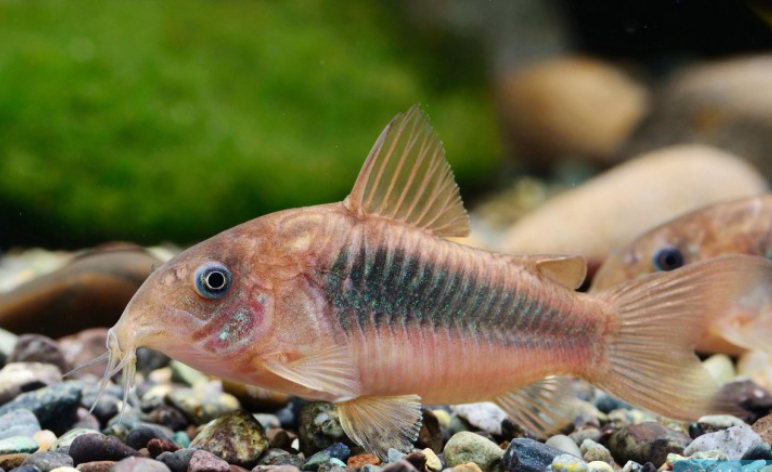
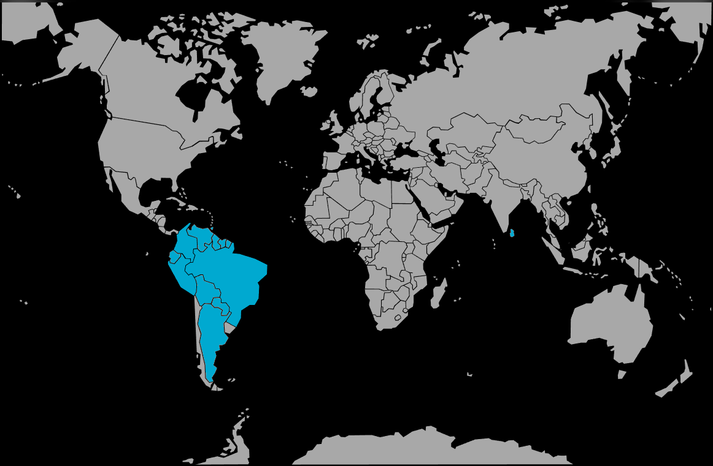

Systématique
- Ordre : Siluriformes
- Famille : Callichthyidae
- Genre : Corydoras
- Espèce : C. aeneus
- Syn. : Hoplosoma aeneum, Callichthys aeneus
- Groupe : Corydoras

Corydoras aeneus, le Corydoras bronze, est sans doute le poisson-chat cuirassé le plus répandu et le plus populaire en aquariophilie.
C'est un poisson de fond robuste, mesurant environ 6 à 7 cm (les femelles étant souvent plus grandes et massives que les mâles). Sa forme sauvage présente une couleur de fond beige rosé à bronze, avec un flanc aux reflets verts métalliques irisés caractéristiques. Il ne possède pas d'écailles mais des plaques osseuses protectrices. Sa bouche est entourée de barbillons sensoriels lui permettant de détecter la nourriture.
Il existe une forme albinos (corps blanc/rosé, yeux rouges) très commune dans le commerce, qui appartient à la même espèce.
C'est un poisson strictement grégaire et pacifique. Il doit être maintenu en groupe d'au moins 6 à 8 individus. Il passe la majeure partie de son temps à fouiller le substrat.
Particularité physiologique : il possède un système de respiration intestinale. Il est tout à fait normal de le voir remonter brusquement à la surface pour "piper" une bulle d'air avant de redescendre rapidement vers le fond. Ce comportement n'est pas signe de maladie mais une adaptation naturelle aux eaux pauvres en oxygène.
Mode : ovipare.
La reproduction est célèbre pour sa "position en T" : le mâle se place perpendiculairement devant la femelle pour féconder les œufs qu'elle tient entre ses nageoires pelviennes.
La femelle colle ensuite les œufs adhésifs par petites grappes sur les vitres, les plantes ou le décor. La ponte est souvent déclenchée par un changement d'eau important avec une eau plus fraîche (simulant la saison des pluies).
Dimorphisme sexuel : La femelle est visiblement plus ronde et plus large que le mâle, surtout lorsqu'elle est observée par le dessus. Elle est aussi généralement un peu plus grande.
Espérance de vie : Environ 5 à 8 ans en captivité, parfois plus.
Il a une aire de répartition immense en Amérique du Sud. On le trouve des contreforts des Andes jusqu'à l'Atlantique (Colombie, Venezuela, Guyana, Brésil, Pérou, Argentine). Il fréquente les eaux calmes et peu profondes à fond meuble.
Répartition

Origine naturelle :
- Large répartition en Amérique du Sud.
- Bassin de l'Orénoque, bassin Amazonien.
- Île de la Trinité.
Paramètres de maintenance
Température : 21 à 27 °C (assez tolérant).
pH : 6,0 à 7,5.
GH : 5 à 15 °dGH.
Substrat : Impératif : sol en sable fin non coupant (type sable de Loire ou sable de rivière) pour ne pas user ses barbillons sensibles.
Volume conseillé : Minimum 80 à 100 L pour un groupe de 6-8 individus. La surface au sol est plus importante que la hauteur d'eau.
Régime alimentaire
Régime : omnivore benthophage.
Il fouille le sol pour manger. Ce n'est pas un "mangeur de déchets".
Il nécessite une alimentation spécifique qui coule au fond : pastilles pour poissons de fond, granulés coulants, et idéalement du vivant ou congelé (vers de vase, tubifex) dont il raffole.